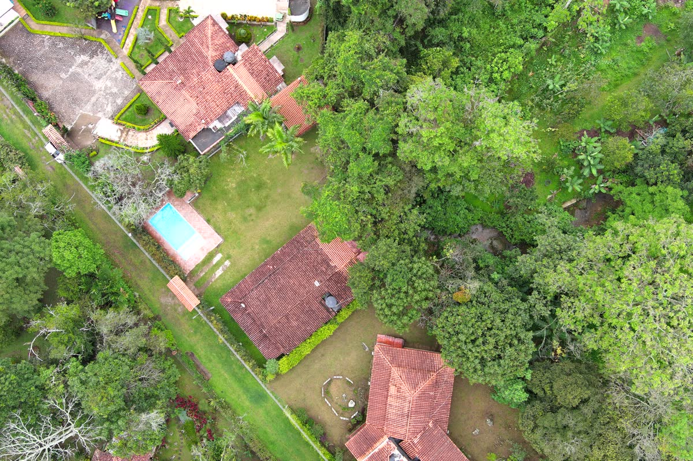

BUILDINGS · MIXED USEC-001
Geotechnical investigation for a country building.
INDUSTRYCOMMERCIAL BUILDING
AREANORTE DE SANTANDER · CO
YEAR2025
SCOPEFULL REPORT + APPENDICES
Stratigraphic and mechanical characterization of a lot intended for country use. SPT borings, laboratory testing, bearing capacity, settlement, NSR-10 seismic analysis, drone survey, DTM and orthophoto. Closed out with foundation and surface drainage recommendations.
Request a similar scope →